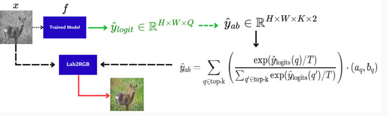
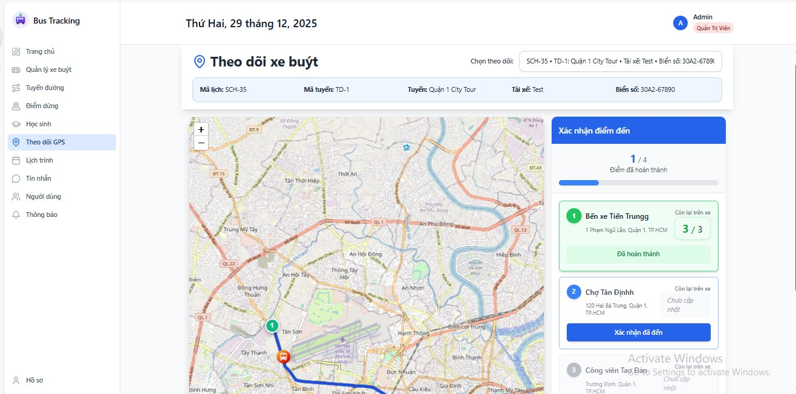
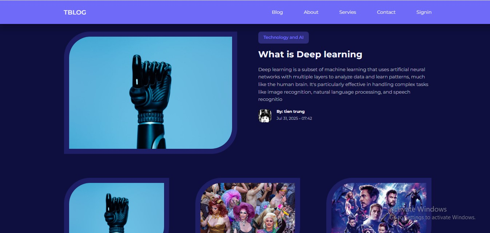
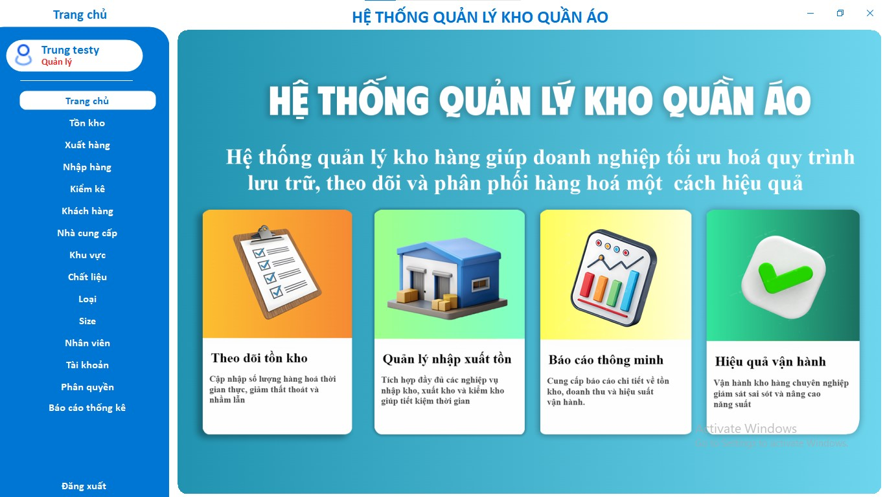
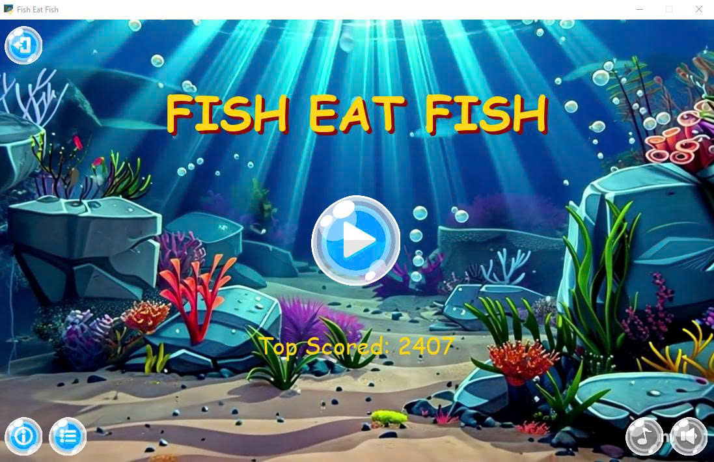

Nguyen Tien TrungIT Student | Software Developer Saigon University, Ho Chi Minh City
Email: thihachcf@gmail.com |
I am a third-year Information Technology student at Saigon University, majoring in Software Engineering. My interests include software development, artificial intelligence, and building practical systems that solve real-world problems. I enjoy working with Java, C++, and Python, and I am always exploring new technologies through personal projects.
|
2023 – Present Saigon University Ho Chi Minh City, Vietnam |
Engineer in Information Technology Major: Software Engineering GPA: 3.29 / 4.0 |
|
 |
Colorful Image Colorization — 2025 Tien Trung, Minh Thuan, Khanh Hoang, Hoang Vu [GitHub] This project implements a deep convolutional neural network (CNN) to automatically colorize images. It addresses the problem of converting grayscale input images into realistic color images. |
|
 |
School Bus Tracking System — 2025 [GitHub] A real-time school bus tracking system that allows parents and school administrators to monitor bus locations and routes. The system provides live updates using WebSocket communication and displays bus movement on an interactive map interface. Tech Stack: Nodejs, React, MySQL, TailwindCSS, Express, SocketIO, Postman |
|
 |
TBlog — 2025 [GitHub] A blogging platform where users can create, edit, and manage blog posts. The system includes user authentication, post management, and a simple content publishing interface for sharing articles online. Tech Stack: PHP, HTML, CSS, JavaScript, MySQL |
|
 |
Clothing Inventory Management System — 2025 [GitHub] A desktop application designed to manage inventory for clothing stores. The system supports product storage, stock updates, and tracking import/export transactions to help businesses manage inventory efficiently. Tech Stack: C#, MySQL |
|
 |
Fish Eat Fish — 2024 [GitHub] A 2D arcade-style game inspired by the classic "big fish eats small fish" mechanic. Players control a fish that grows by consuming smaller fish while avoiding larger predators. Tech Stack: Python, Pygame, Pymedia, MySQL |
Email: thihachcf@gmail.com
GitHub: @uncletientrung
LinkedIn: Nguyễn Trung
Location: TP. Hồ Chí Minh, Việt Nam